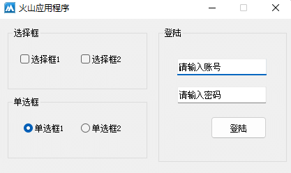
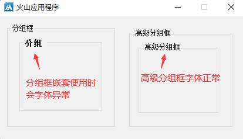
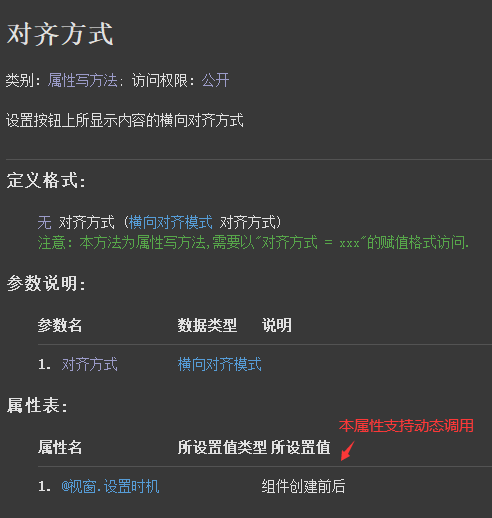
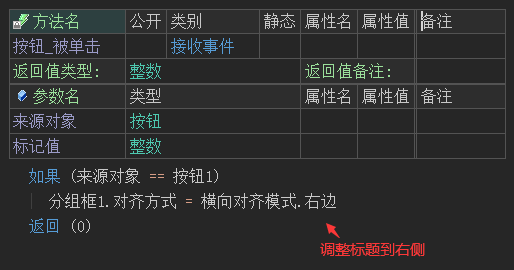
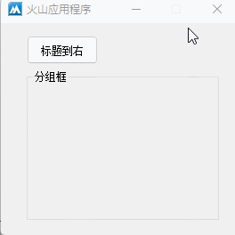
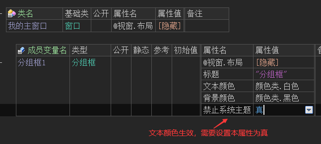
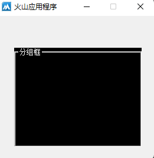

作者：创世魂
● 概述
无论是分组框还是高级分组框都是分类性质的容器，主要用于分类操作。
如下图所示，可以将一些相同类型的组件或者某种特定功能的组件分类存放。

使用高级分组框可以解决分组框嵌套使用时的字体异常问题，如下所示：

● 对齐方式(写)
帮助文档如下图：
本属性用于设置分组框标题的显示位置。
注：本属性的设置时机为“组件创建前后”，因此本属性支持动态设置。

代码编写如下图：
按钮点击后修改标题显示在分组框右侧。

运行效果如下图：
最终标题将会调整到右侧显示。

● 文本颜色(写)
以上两个属性分别用于设置标题颜色和分组框整体的背景色。
代码编写如下图：
在变量属性栏直接设置即可，想要让文本颜色属性生效需要额外设置“禁用系统主题”属性为真，否则文本颜色将无效。

运行效果如下图：
